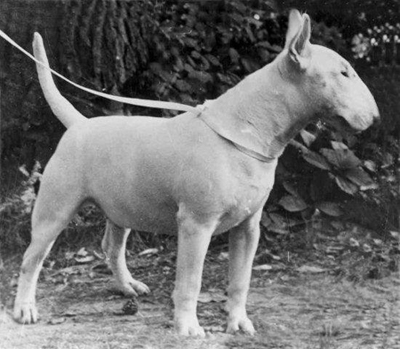
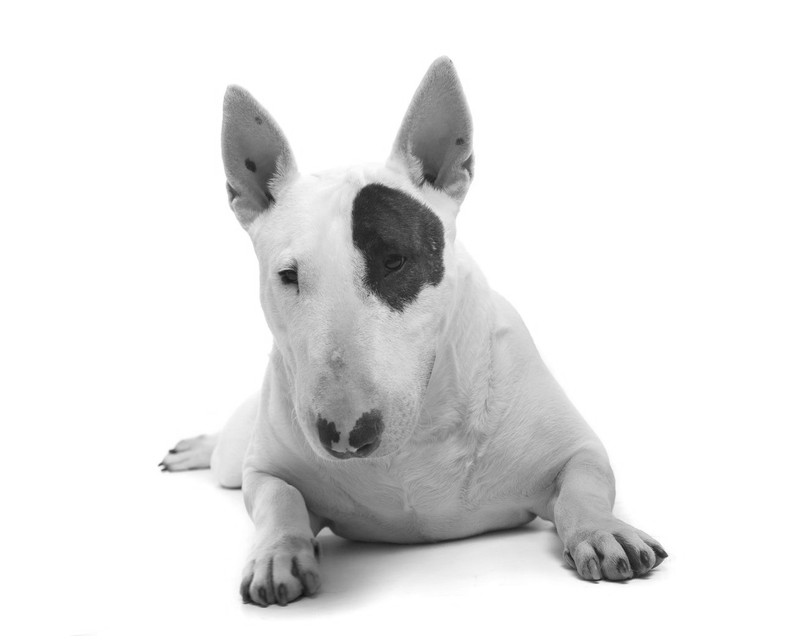

De bulterriër, zoals die tegenwoordig bekend is, is omstreeks 1860 in Engeland ontstaan. Door 'doggen' (buldoggen of bulmastiffs) met terriërs te kruisen ontstond een kleine, snelle, behendige, maar toch sterke vechthond, die 'Bull-and-Terrier' werd genoemd. De hondenfokker James Hinks heeft dit type hond verder ontwikkeld naar het rastype. Hinks richtte zich met name op het fokken van de witte bulterriërs; dit type is ook heden nog bekend. De bulterriër werd van het begin af aan in verschillende maten gefokt. Zo bestaat nog steeds de mini(atuur)-bulterriër. Hinks kwam in 1862 met zijn eerste witte Bulterriër, 'n teef genaamd Puss. Andere (vecht-)hondenfokkers betwijfelden openlijk de kracht en raszuiverheid van zijn "Dameshondje": Puss woog 40 pound (hooguit 20 kilo). Hinks wedde met zijn tegenstanders om 5 Engelse ponden en 'n krat champagne, dat Puss 'n oud-type bull-and-terrier verslaan kon. De tegenstander was 'n teef van 60 pound (de helft zwaarder!) en Puss won het gevecht in 'n half uur, met zó weinig verwondingen, dat zij de dag erna, op de Hondententoonstelling in Birmingham, ook nog een prijs won voor conditie en schoonheid. Vanaf dat moment was de reputatie van de Bulterriër gevestigd.


Fysieke Kenmerken
De Bull Terriër behoort tot de middelgrote hondenrassen. Er is geen standaardgrootte, maar hun afmetingen horen de indruk te wekken dat de honden een maximum aan substantie hebben. Er bestaan ook Dwerg- of Miniatuur Bull Terriërs. Het gewicht bij dit ras varieert tussen 9 kg en 25 kg.
De honden hebben een kortharige strakke vacht, die effen wit, wit met aftekeningen op de kop en gestroomd kan zijn. Ook rood, zwartgestroomd, fawn en driekleurig (black and tan met beetje wit) zijn toegestaan. Bij gekleurde vachtpatronen moeten de kleuren, en dus niet het wit, overheersen.
Gevoeligheden en welzijn
Bull Terriërs zijn zoals hun soortgenoten robuuste honden die tegen een stootje kunnen en een goede weerstand hebben.
De vacht verdient minimale verzorging en hoeft enkel in de ruiperiode geborsteld (rubberen borstel met nopjes) te worden om dode haren te verwijderen.
De oren moeten wel regelmatig zuiver gemaakt worden.
Wanneer erfelijke aandoeningen genetisch kunnen worden doorgegeven van de ouders op hun kinderen, is het aangeraden dat de fokker eerst het DNA van de ouderdieren laat testen.
Ook als de hond geen gezondheidsproblemen vertoont, blijft het uiteraard belangrijk om minstens jaarlijks met uw dier op controle te gaan bij een dierenarts.